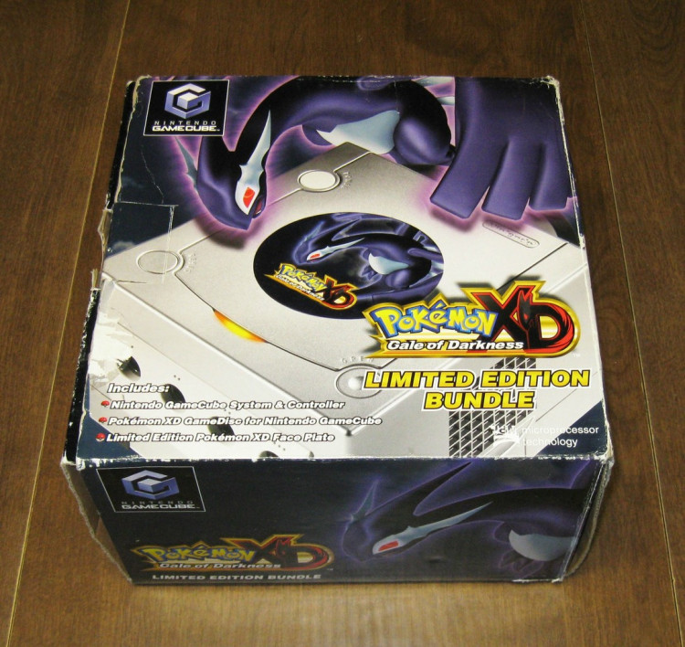

The Systems
|
The GameCube was the 2nd most powerful 6th gen console. ahead of the PS2, but less so than the original Xbox.
its mini disc was a controversial choice, choosen by Nintendo to curb potential Piracy, it primarily limited the data that could be read at one time,
sometimes requiring games to have more than one disc just to deliver the full game's content.
The GameCube's "Lunch Box" design, (named for its handle on the back), made it difficult to market towards more Mature gamers. it was, however, very compact. |

Original colours
 |
The GameCube was sold in 3 primary colours. 4, if you include the "Spice Orange" sold only in the Japan/Korea region. |
Spice Orange
 |
The Spice Orange GameCube was sold only in Korea/Japan. very common, and can be imported from those regions at reasonable prices. |
Pearl White
 |
Sold only in Europe. it is rarer than the Spice Orange GameCube, but still fairly common. |
Metroid Prime Bundle
 |
Known as the "Metroid Prime Pak", it is a standard black GameCube with a Metroid faceplate. (note, the US version did not recieve the faceplate). 10000-50000 for the EU, and 5000-10000 for the US estimated to have been made. |
Pokemon XD Bundle
|  | Made for the NA and JP regions. a Platinum Silver GameCube with a Pokemon XD faceplate. 5000-10000 made for their respective regions. |
Resident Evil 4 Bundle
 |
Made only for the PAL region. another Platinum Silver GameCube with a Resident Evil 4 faceplate. 5000-10000 estimated to have been made. |